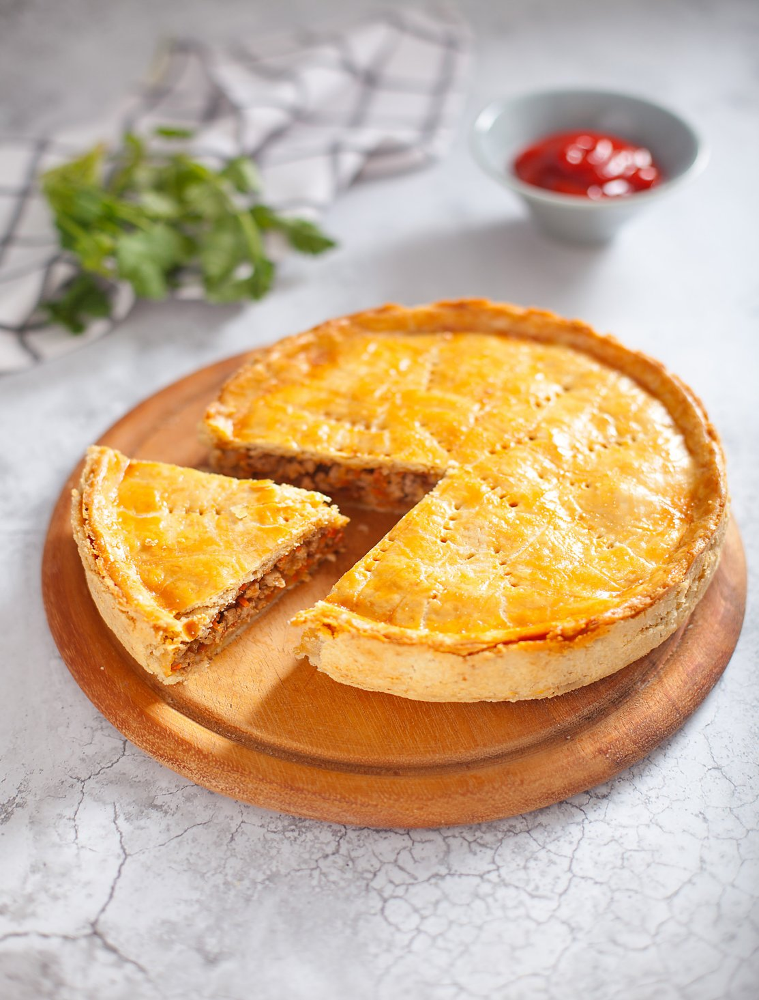

История мясного пирога теряется во тьме веков. Сейчас мясной пай популярен в Англии, Австралии, Канаде, Новой Зеландии. В каждой стране есть свой вариант мясного пирога, но всех их объединяет одно: сочетание хрустящего теста и сочной мясной начинки. В качестве базового рецепта мы взяли австралийский мясной пирог. Основу в нашем рецепте мы сделали из рубленого теста, которое очень легко приготовить дома, но можно взять и покупное бездрожжевое слоеное.
для теста:
для начинки: